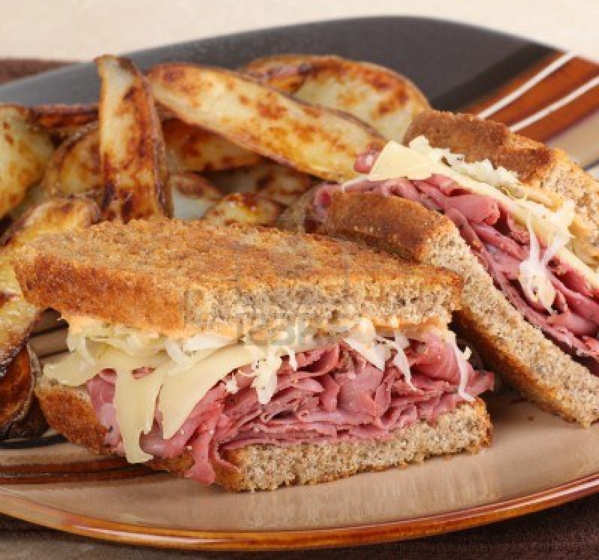

Reuben Sandwich

Desciption
A delicious and easy to make sandwich. Serve with a hot bowl of vegetable soup and dill pickles on the side.
Ingredients
- 2 tablespoons butter
- 8 slices of rye bread
- 8 slices deli sliced corned beef
- 8 slices Swiss cheese
- 1 cup sauerkraut
- 1/2 cup Thousand Island dressing
Steps
- Prehead a large skillet or girddle on medium heat
- Lightly butter one side of bread slices. Spread non-buttered sides with Thousand Island dressing. On 4 bread slices,
layer 1 slice Swiss cheese, 2 slices corned beef, 1/4 cup sauerkraut and second slice of Swiss cheese. Top with remaining
bread slices, buttered sides out.
- Grill sandwiches until both sides are golden brown, about 5 minutes per side. Serve hot.
Return to top of the page
Return to home page